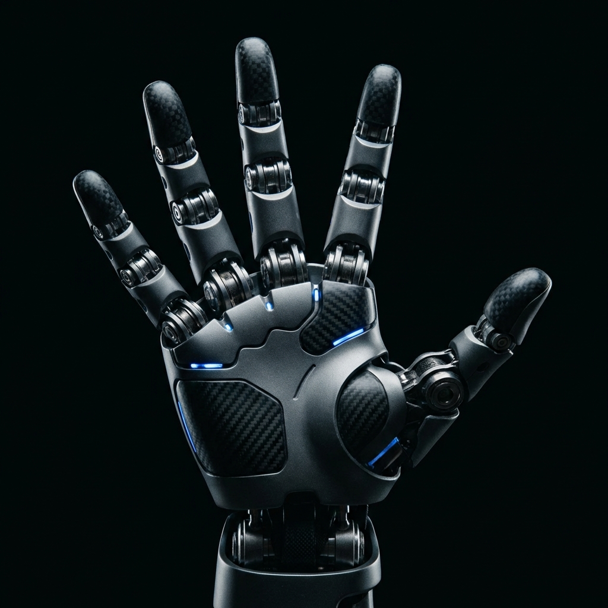

안녕하세요 👋
웹 서비스의 처음부터 끝까지,
아이디어를 현실로 만들고
PLC 기반 자동화까지 연결합니다.
HAND TRACKING DEMO
WEBCAM READY노트북 웹캠 기준 핸드트래킹 화면입니다. 왼손 랜드마크를 읽고 5지 로봇손이 같은 포즈를 따라갑니다.
허용해야 핸드트래킹과 랜드마크 분석이 시작됩니다.
왼손을 카메라에 보여주세요

랜드마크 21개와 연결선을 실제로 그려 입력 손 구조를 시각화
검출 좌표를 로봇손 오버레이로 변환해 손가락 움직임을 연결
손 방향과 깊이값에 따라 로봇손 시각이 입체적으로 반응
웹 개발과 PLC 자동화를 함께 다루는 엔지니어 최성진입니다.
웹과 앱, 클라우드까지 사용자 경험과 서버 안정성을 함께 고민하며 개발합니다.
현장에서는 PLC 기반 시퀀스 제어, 인터락 설계, 센서·액추에이터 연동, 트러블슈팅 관점으로 자동화 문제를 풀어왔습니다.
새로운 기술을 배우고 실제 프로젝트에 적용하는 것을 좋아하며, 산업 자동화와 피지컬 AI가 만나는 지점에도 관심을 넓히고 있습니다.
시퀀스 제어와 안전 인터락, 센서·액추에이터 이해, 현장 디버깅 감각을 웹과 자동화 시스템을 잇는 실행력으로 연결합니다.
검증된 현장 역량과 지금 확장 중인 개발 역량을 같은 무게로 섞지 않고 분리해 정리했습니다
PLC와 생산기술은 이미 검증된 실무축으로, 웹과 AI 도구는 현재 만들어가며 넓히는 축으로 보여주고 있습니다.
이력서 기반 주요 경력과 현장 성과
18년 이상 제조 현장에서 생산기술, PLC 자동화, 설비 유지보수, 공정 개선을 수행해왔습니다. 단순 운영이 아니라 라인 설계, 시퀀스 제어 최적화, 비전 통신 연동, 양산 안착까지 직접 해결하는 역할에 강점이 있습니다.
아진전자부품㈜
Brake, LED, Heater 등 핵심 양산 아이템을 담당하며 생산라인 설계, PLC 디버깅, 설비 최적화, P2부터 SOP까지의 검증과 양산 안정화를 수행했습니다.
㈜넥솔론
1~3공장 Maintenance를 담당하며 PLC 기반 문제 해결, Sequence line 결선, Vacuum pump overhaul, 자동화 설비 유지보수와 성능 개선 업무를 지속적으로 수행했습니다.
AI · Web · Physical AI Preparation
현장 감각 위에 AI 기반 웹 개발 역량을 쌓고 있으며, 제조 지능화와 피지컬 AI로 연결되는 다음 단계의 커리어를 준비하고 있습니다.
함께 일하고 싶다면 언제든 연락주세요